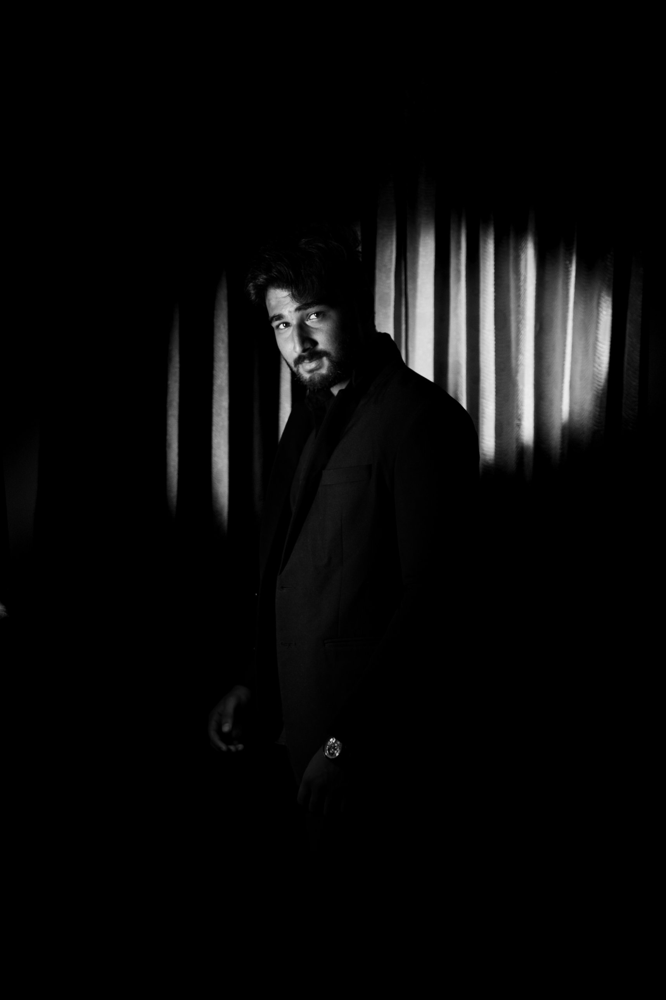

I bring an evidence-driven, detail-first approach to AI system design: measuring hallucination rate, citation faithfulness, and failure modes rather than assuming a model works because it runs. I work across the full stack of a modern AI system — model internals, retrieval, and multi-agent orchestration — building architectures from the paper up and evaluating them rigorously before calling them done.
A fully local, Perplexity-style search-and-answer engine running entirely on an 8GB M2 Mac. A from-scratch 20M-parameter transformer sits over a web-search RAG pipeline with a dedicated citation verifier, backed by a quantized Qwen2.5-3B production layer. Benchmarked hallucination and citation faithfulness across FP16, Q8, and Q4 quantization.
A GPT-style language model built end-to-end in Python — custom tokenizer, transformer, and training loop written from scratch to study attention internals directly. Later extended to load frozen pretrained weights into the self-built architecture and debug inference under non-standard attention and decoding schemes.
A LangChain-based multi-agent framework that autonomously runs a company's departments — prototyped on a T-shirt company — including a dedicated design agent and an n8n-style live dashboard that visualizes agent activity in real time.
A convolutional neural network trained on histopathology images to flag early-stage malignant cells. Augmentation and class-imbalance handling were tuned specifically to maximize recall and minimize false negatives in a screening context.
Open to AI engineer and AI research roles, and Forward Deployed Engineer positions.
Let's talk↗